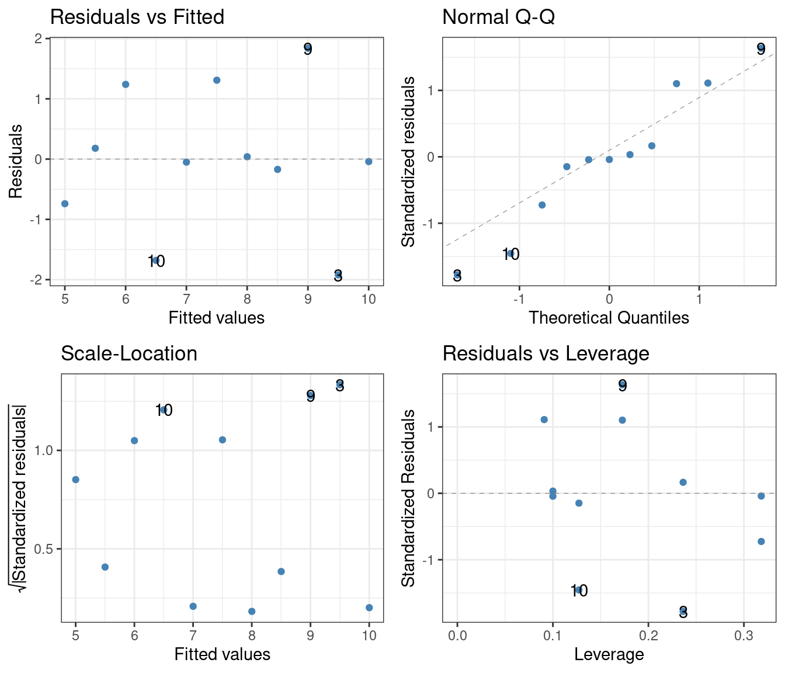
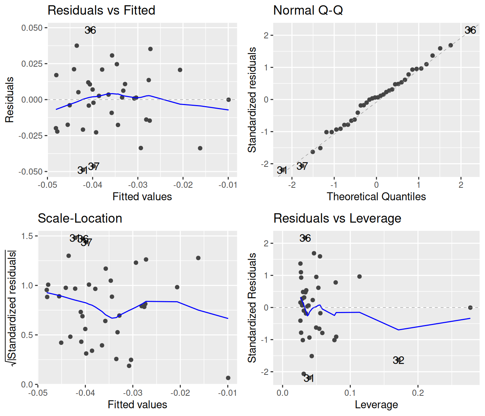
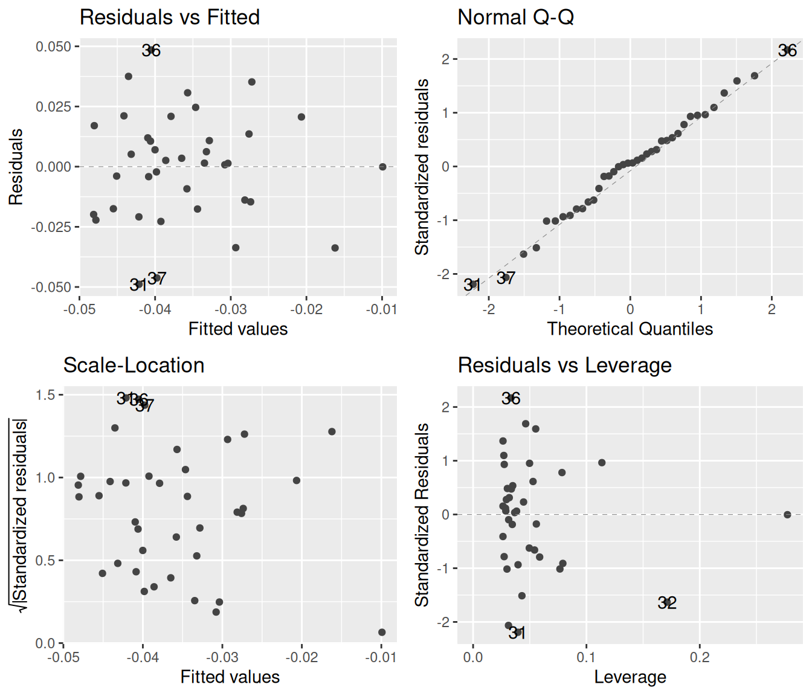
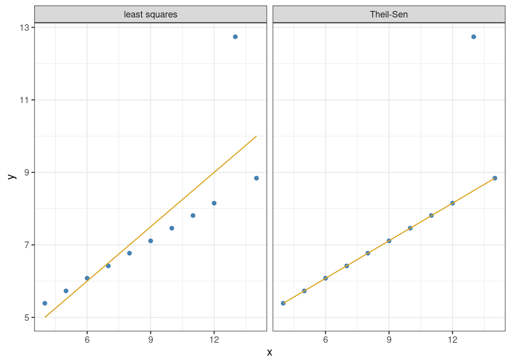

Linear regression was invented by Sir Francis Galton (half-cousin to Charles Darwin), in relation to a very specific problem. He was studying the relationship between the body heights of humans and their children. We can follow his lead and download a dataset which is similar to the one used by Sir Francis, but was in fact gathered by Karl Pearson in 1903 (the fact that the dataset strictly focuses on fathers and their sons, excluding mothers and daughters, contributes an extra air of historical authenticity to the analysis):
# A tibble: 1,078 × 2
Father Son
<dbl> <dbl>
1 65 59.8
2 63.3 63.2
3 65 63.3
4 65.8 62.8
5 61.1 64.3
6 63 64.2
7 65.4 64.1
8 64.7 64
9 66.1 64.6
10 67 64
# … with 1,068 more rows
Displaying the above in a graph yields the following:
ggplot(heights, aes(x = Father, y = Son)) +geom_point(colour ="steelblue", alpha =0.4) +coord_fixed() +# Keep a 1-to-1 aspect ratio between the axesgeom_smooth(method = lm) +theme_bw()
A linear smoother has also been added, to illustrate two points. First, notice that although the data are heavily scattered, the confidence interval (gray shaded area) around the linear fit is very narrow. This is due to the fact that this interval is not a direct measure of the variability, but of how reliable the estimate is at any one point. Although the data have large variance, one can be highly certain of the mean trends; hence the narrow confidence region.
The other, more relevant point to notice is that the slope of the line is less than one. We can show this by including a line in the graph whose slope is one and which crosses the center of the blurb of points:
meanFather <-mean(heights$Father) # Average height of fathersmeanSon <-mean(heights$Son) # Average height of sonsic <- meanSon - meanFather # Calculate intercept, assuming slope of 1print(ic) # The intercept is, interestingly almost perfectly 1
The implication is that sons of tall fathers, on average, tend to be shorter than their father, and conversely: sons of short fathers on average are taller than their father. This phenomenon gives rise to the name of linear regression: Galton described it in a study called “Regression towards mediocrity in hereditary stature” (Galton 1886). As an aside, he also worked out the method of finding the “best” line that fits the data.
This last part is what we are interested in. Galton’s way of doing this was to pick the slope and intercept of the line such that the summed deviations of the points from the line are minimized. Or, rather, the sum of squared deviations, to prevent very large positive and very large negative deviations canceling each other in the sum, making it appear as if the total deviation was very small.
One can imagine that there must be some reasonably straightforward mathematical procedure to obtain the intercept and slope from arbitrary data. This is indeed the case. But fortunately, there is no need to do it by hand, because the lm function automates this process.1 Let us perform the regression on the height data:
lm(Son ~ Father, data = heights) %>%summary()
Call:
lm(formula = Son ~ Father, data = heights)
Residuals:
Min 1Q Median 3Q Max
-8.8910 -1.5361 -0.0092 1.6359 8.9894
Coefficients:
Estimate Std. Error t value Pr(>|t|)
(Intercept) 33.89280 1.83289 18.49 <2e-16 ***
Father 0.51401 0.02706 19.00 <2e-16 ***
---
Signif. codes: 0 '***' 0.001 '**' 0.01 '*' 0.05 '.' 0.1 ' ' 1
Residual standard error: 2.438 on 1076 degrees of freedom
Multiple R-squared: 0.2512, Adjusted R-squared: 0.2505
F-statistic: 360.9 on 1 and 1076 DF, p-value: < 2.2e-16
Recall that summary returns a table of regression coefficients (under “Coefficients:” above). The two fitted coefficients are the intercept and the slope. The intercept is conveniently called (Intercept), but the slope is labeled by the predictor—consistently with the behavior of lm in one- and two-way ANOVA calculations. We see that the intercept is about 33.9 inches; this would be the average height of a son born to a father with zero height.2 The slope is about 0.5; that is, a father who is one inch taller than another father will have, on average, sons who are half an inch taller (than the sons of the first, shorter father).
12.1 Interpreting the results of a linear regression
The intercept and slope which minimize the sum of the squared deviations from the fit can be obtained for any data. But the question is: does such a linear fit actually mean anything? The situation is similar to what we discussed in Section 9.1: one can always compute the difference of the means between two groups of data, but whether the observed difference is meaningfully different from zero is another question. In the case of the two groups, we introduced techniques such as the Wilcoxon test and the t-test to answer that question.
For linear regression, a similar thing is possible. As seen, the output of lm above contains p-values and other statistics. The p-values are both practically zero, indicating that one can be absolutely certain that the observed nonzero intercept and slope aren’t simply due to chance. But for these conclusions to be meaningful, the usual assumptions must hold: the residuals should be independent from one another, should be normally distributed, and should be homoscedastic (have equal variance for all values of the predictor).
One can check whether these assumptions hold with diagnostic plots. In this particular example, we have a nearly perfect match-up between theory and the data, so the statistical results fro the linear regression should be reliable:
To further illustrate possible difficulties of interpretation, let us take a look at a famous dataset that was designed for precisely this purpose (Anscombe 1973). The data are built into R (with the name anscombe), but are not in the most convenient format:
These are actually four datasets merged into one: x1 and y1 are x and y coordinates of the points from the first set, x1 and y2 from the second set, and so on. We can use pivot_longer to normalize these data:
# A tibble: 44 × 3
set x y
<chr> <dbl> <dbl>
1 1 10 8.04
2 2 10 9.14
3 3 10 7.46
4 4 8 6.58
5 1 8 6.95
6 2 8 8.14
7 3 8 6.77
8 4 8 5.76
9 1 13 7.58
10 2 13 8.74
# … with 34 more rows
We can now visualize each set, along with linear fits:
ans_long %>%ggplot() +aes(x = x, y = y, colour = set) +geom_point() +geom_smooth(method = lm, se =FALSE) +facet_wrap(~ set, nrow =2, labeller = label_both) +theme_bw()
The data have been carefully crafted so that the least-squares regression line has an intercept of 3 and a slope of 0.5 for each of the four sets. Furthermore, the p-values are also identical to many decimal places. But this visual representation reveals what would have been much harder to intuit otherwise: that only the first set has a real chance of conforming to the assumptions of linear regression. Performing the regression on just this set and creating diagnostic plots:
lm(y ~ x, data =filter(ans_long, set =="1")) %>%summary()
Call:
lm(formula = y ~ x, data = filter(ans_long, set == "1"))
Residuals:
Min 1Q Median 3Q Max
-1.92127 -0.45577 -0.04136 0.70941 1.83882
Coefficients:
Estimate Std. Error t value Pr(>|t|)
(Intercept) 3.0001 1.1247 2.667 0.02573 *
x 0.5001 0.1179 4.241 0.00217 **
---
Signif. codes: 0 '***' 0.001 '**' 0.01 '*' 0.05 '.' 0.1 ' ' 1
Residual standard error: 1.237 on 9 degrees of freedom
Multiple R-squared: 0.6665, Adjusted R-squared: 0.6295
F-statistic: 17.99 on 1 and 9 DF, p-value: 0.00217
lm(y ~ x, data =filter(ans_long, set =="1")) %>%autoplot(which =3:2, smooth.colour =NA, colour ="steelblue") +theme_bw()

There is nothing to suggest on the diagnostic plots that there should be anything wrong with the regression—and, in fact, there isn’t anything wrong with it. The computed p-values for the intercept and slope are therefore reliable.
The situation changes for the other three sets. Let us look at set 2:
lm(y ~ x, data =filter(ans_long, set =="2")) %>%summary()
Call:
lm(formula = y ~ x, data = filter(ans_long, set == "2"))
Residuals:
Min 1Q Median 3Q Max
-1.9009 -0.7609 0.1291 0.9491 1.2691
Coefficients:
Estimate Std. Error t value Pr(>|t|)
(Intercept) 3.001 1.125 2.667 0.02576 *
x 0.500 0.118 4.239 0.00218 **
---
Signif. codes: 0 '***' 0.001 '**' 0.01 '*' 0.05 '.' 0.1 ' ' 1
Residual standard error: 1.237 on 9 degrees of freedom
Multiple R-squared: 0.6662, Adjusted R-squared: 0.6292
F-statistic: 17.97 on 1 and 9 DF, p-value: 0.002179
lm(y ~ x, data =filter(ans_long, set =="2")) %>%autoplot(which =3:2, smooth.colour =NA, colour ="steelblue") +theme_bw()

Blindly reading off the p-values without considering the diagnostic plots might lead one to take them seriously. This would be wrong however, as the assumptions of the linear regression are clearly not fulfilled based on the diagnostic plots. Especially the left one shows that the residuals are not independent, and certainly not identically and normally distributed.
In set 3, the trends are driven too much by a single outlier:
lm(y ~ x, data =filter(ans_long, set =="3")) %>%summary()
Call:
lm(formula = y ~ x, data = filter(ans_long, set == "3"))
Residuals:
Min 1Q Median 3Q Max
-1.1586 -0.6146 -0.2303 0.1540 3.2411
Coefficients:
Estimate Std. Error t value Pr(>|t|)
(Intercept) 3.0025 1.1245 2.670 0.02562 *
x 0.4997 0.1179 4.239 0.00218 **
---
Signif. codes: 0 '***' 0.001 '**' 0.01 '*' 0.05 '.' 0.1 ' ' 1
Residual standard error: 1.236 on 9 degrees of freedom
Multiple R-squared: 0.6663, Adjusted R-squared: 0.6292
F-statistic: 17.97 on 1 and 9 DF, p-value: 0.002176
lm(y ~ x, data =filter(ans_long, set =="3")) %>%autoplot(which =3:2, smooth.colour =NA, colour ="steelblue") +theme_bw()

As before, the diagnostic plots show that the independence of the residuals is violated. Finally, in set 4, the whole regression is based on a single point whose predictor is different from the rest:
lm(y ~ x, data =filter(ans_long, set =="4")) %>%summary()
Call:
lm(formula = y ~ x, data = filter(ans_long, set == "4"))
Residuals:
Min 1Q Median 3Q Max
-1.751 -0.831 0.000 0.809 1.839
Coefficients:
Estimate Std. Error t value Pr(>|t|)
(Intercept) 3.0017 1.1239 2.671 0.02559 *
x 0.4999 0.1178 4.243 0.00216 **
---
Signif. codes: 0 '***' 0.001 '**' 0.01 '*' 0.05 '.' 0.1 ' ' 1
Residual standard error: 1.236 on 9 degrees of freedom
Multiple R-squared: 0.6667, Adjusted R-squared: 0.6297
F-statistic: 18 on 1 and 9 DF, p-value: 0.002165
lm(y ~ x, data =filter(ans_long, set =="4")) %>%autoplot(which =3:2, smooth.colour =NA, colour ="steelblue") +theme_bw()
Clearly, homoscedasticity (equality of residual variances across all values of the predictor) is heavily violated.
These examples are there to urge caution when interpreting regression statistics. This problem becomes much more acute when relying on multiple regression, where there are more than one predictor variables. Since high-dimensional data cannot be visualized as easily as the datasets above, often the diagnostic plots are the only way to tell whether the assumptions of regression hold or not.
12.2 A non-parametric method: Theil–Sen regression
A nonparametric alternative to least-squares regression is the Theil–Sen regression. It is generally much more robust against outliers than the least-squares method. It also does not require that the residuals are normally distributed, or that they are homoscedastic. There are also two disadvantages, the main one being that it can only be used for simple regression (one single predictor). It can also be slower to compute, but with modern computers, this is rarely an issue.
The way Theil–Sen regression works is simple:
A line is fit between all possible pairs of points, and their slopes are recorded.
The overall regression slope m is the median of all these pairwise slopes.
The intercept b is the median of all yi – mxi values, where xi is the ith predictor and yi the ith measurement at that predictor.
To use the Theil–Sen regression, one has to install the package mblm (“median-based linear models”):
install.packages("mblm")library(mblm)
The function performing the regression is itself called mblm. A note of caution: its data argument, for some reason, is not called data but dataframe. Let us apply it to set 3 in the Anscombe dataset (the one with the single strong outlier):
mblm(y ~ x, dataframe =filter(ans_long, set =="3")) %>%summary()
Call:
mblm(formula = y ~ x, dataframe = filter(ans_long, set == "3"))
Residuals:
Min 1Q Median 3Q Max
-0.0045 -0.0022 0.0000 0.0025 4.2435
Coefficients:
Estimate MAD V value Pr(>|V|)
(Intercept) 4.0050000 0.0074130 65 0.00501 **
x 0.3455000 0.0007413 66 0.00380 **
---
Signif. codes: 0 '***' 0.001 '**' 0.01 '*' 0.05 '.' 0.1 ' ' 1
Residual standard error: 1.415 on 9 degrees of freedom
As seen, the predicted intercept and slope are no longer 3 and 0.5, but 4 and 0.35 instead. Visualizing this, side by side with the ordinary least-squares regression:
leastSquaresFit <-lm(y ~ x, data =filter(ans_long, set =="3"))TheilSenFit <-mblm(y ~ x, dataframe =filter(ans_long, set =="3"))ans_long %>%filter(set =="3") %>%mutate(`least squares`=predict(leastSquaresFit),`Theil-Sen`=predict(TheilSenFit)) %>%pivot_longer(cols =c("least squares", "Theil-Sen"),names_to ="type", values_to ="prediction") %>%ggplot() +geom_point(aes(x = x, y = y), colour ="steelblue") +geom_line(aes(x = x, y = prediction), colour ="goldenrod") +facet_grid(. ~ type) +theme_bw()

The Theil–Sen regression correctly recognizes the outlier for what it is, and remains unaffected by it.
12.3 Exercises
The file plant.growth.rate.csv contains individual plant growth data (mm/week), as a function of soil moisture content. Do plants grow better in more moist soils? Visualize the relationship, then perform and interpret a linear regression using both parametric and non-parametric methods. Use diagnostic plots to check whether the assumptions of the parametric test are satisfied.
It is difficult to measure the height of a tree. By contrast, the diameter at breast height (DBH) is easy to measure. Can one infer the height of a tree by measuring its DBH? The built-in dataset trees contains DBH data (somewhat misleadingly labeled Girth), as well as measured height and timber volume of 31 felled black cherry trees. You can ignore timber volume, and focus instead on how well DBH predicts tree height. Plot the relationship, perform both parametric and non-parametric regression, and create diagnostic plots. Interpret the results, and summarize how reliable it is to use DBH to infer tree height.
Galton, Francis. 1886. “Regression Towards Mediocrity in Hereditary Stature.”Journal of the Anthropological Institute of Great Britain and Ireland 15: 246–63.
It has been doing this same minimization even for the one- and two-way ANOVA we have been working with in Chapter 10 and Chapter 11. It’s just that the results of doing so are not so easy to visualize when the predictors are categorical variables.↩︎
This also illustrates the dangers of extrapolating the results of linear regression too far: generally, a linear relationship will only hold within a restricted range of values.↩︎